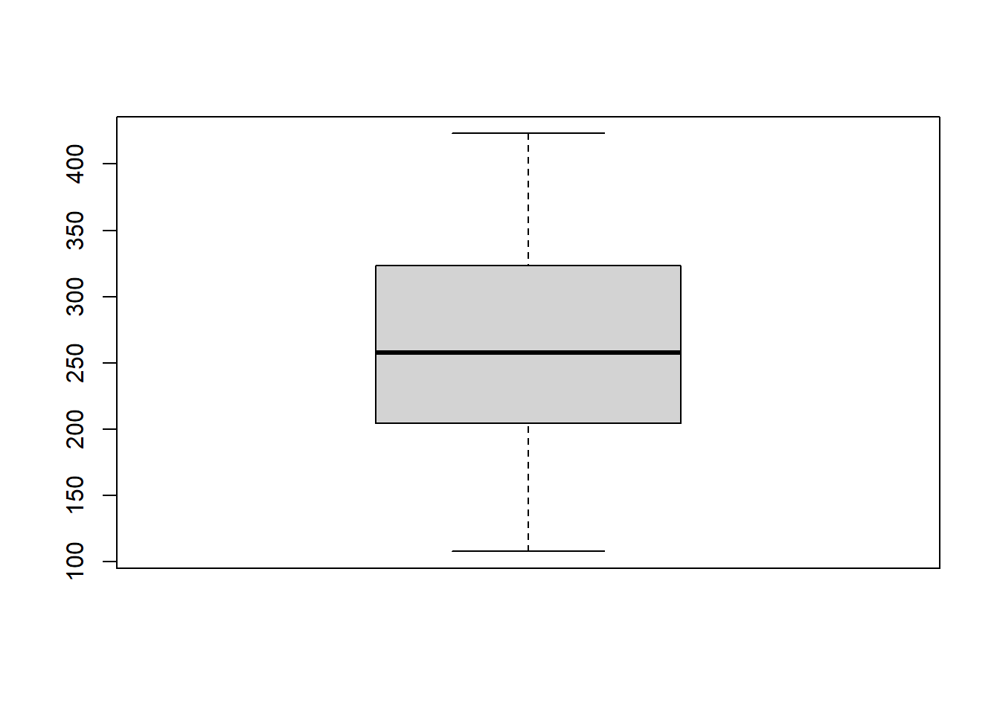

Chapter 11 Test de contraste de variables continuas con grupos de más de dos niveles
En este capítulo veremos como comparar variables continuas entre más de dos grupos, en resumen abordaremos la técnica de ANOVA y su alternativa no-paramétrica, Kruskal Wallis
11.1 Anova
El análisis de varianza de una vía (ANOVA), también conocido como one-way ANOVA o Anova de un factor, es una extensión de la prueba t de dos muestras independientes para comparar medias en una situación en la que hay más de dos grupos. En el ANOVA de una vía, los datos se organizan en varios grupos basándose en una única variable de agrupación (también llamada variable factorial o independiente).
Esta definición elegante puede ser clarificada con un ejemplo, retomemos la base de datos del ejercicio final del capítulo anterior “Toothgrowth”. Para los que no lo recuerdan, esta base contiene la longitud de los odontoblastos (células responsables del crecimiento de los dientes) en 60 cobayas (variable “len”). Cada animal recibió uno de los tres niveles de dosis de vitamina C (0,5, 1 y 2 mg/día) -la variable “dose”- mediante uno de los dos métodos de administración (la variable “supp”), zumo de naranja (OJ) o ácido ascórbico (VC).
En la sección anterior evaluamos si la longitud de los odontoblastos difería de acuerdo al tipo de administración (una variable dicotómica).
Pero supongamos que queremos ver si hay diferencias en el largo de los odontoblastos de acuerdo a la dosis recibida. En este caso la variable “dose” tiene tres niveles, y la prueba t sólo admite dos grupos (no tres).
Una alternativa es conducir muchos test t: “0.5 vs 1”, “1 vs 2” y “0.5 vs 2”. Este enfoque además de complicarnos la vida, es erróneo porque aumenta las chances de error tipo I en un fenómeno que se conoce como alpha inflation (investiguenlo porque es muy interesante)
La alternativa correcta es la realización de un ANOVA. Veamos como funciona a partir de sus hipótesis:
Hipótesis nula (H0): las medias de todos los grupos son iguales
Hipótesis alternativa (H1): Al menos una media de un grupo no es igual a las demás.
Esto quiere decir que, ANOVA testea estos hipotéticos tres test t (“0.5 vs 1”, “1 vs 2” y “0.5 vs 2”) al mismo tiempo, y basta con que uno de ellos sea significativamente diferente como para que el ANOVA sea significativo.
Pongamos en práctica nuestro ejemplo:
library(datasets)
diente<-ToothGrowthHay que chequear siempre que las variables estén bien categorizadas
str(diente) ## 'data.frame': 60 obs. of 3 variables:
## $ len : num 4.2 11.5 7.3 5.8 6.4 10 11.2 11.2 5.2 7 ...
## $ supp: Factor w/ 2 levels "OJ","VC": 2 2 2 2 2 2 2 2 2 2 ...
## $ dose: num 0.5 0.5 0.5 0.5 0.5 0.5 0.5 0.5 0.5 0.5 ...Como dosis es un factor pero está categorizado como numérico, debemos convertirla
diente$dose<-as.factor(diente$dose)Ahora sí estamos listos para realizar el ANOVA
# Calculamos el anova y lo asignamos a un objeto
res.aov <- aov(len ~ dose, data = diente)
# Después exploramos los resultados
summary(res.aov)## Df Sum Sq Mean Sq F value Pr(>F)
## dose 2 2426 1213 67.42 9.53e-16 ***
## Residuals 57 1026 18
## ---
## Signif. codes: 0 '***' 0.001 '**' 0.01 '*' 0.05 '.' 0.1 ' ' 1Nos dió significativo!!!. ¿Qué significa esto? Que al menos uno de los pares de comparaciones (“0.5 vs 1”, “1 vs 2” y “0.5 vs 2”) es significativamente diferente, o que al menos un grupo es diferente con respecto a alguno de todos los otros. ¿Pero cual? Ah, eso todavía no podemos saberlo. No hasta que hagamos un proceso llamado post-hoc. Pero paciencia que aún falta muchas cosas por saber.
11.1.1 Supestos de la ANOVA
Dijimos que ANOVA es una generalización del test t y como tal ha heredado muchas de sus ventajas (y las ha optimizado para más de un grupo) y también sus debilidades. Por ende el grupo de supuestos que deben cumplirse para realizarse correctamente es muy similar:
Las observaciones se obtienen de forma independiente y aleatoria de la población definida por los niveles de los factores
Los datos de cada nivel de factor están distribuidos normalmente.
Estas poblaciones normales tienen una varianza común. (Se puede utilizar la prueba de Levene para comprobarlo).
En resumidas cuentas ANOVA requiere como el test t de el cumplimiento del supuesto de normalidad
11.1.2 Interpretando el modelo de ANOVA
Como vimos en la sintaxis de R, para realizar la ANOVA, creamos un objeto al que le dimos los resultados y después llamamos a la función summary() para visualizarlo. Este objeto creado (si miran su ambiente ahí estará) es de la clase lista, y guarda múltiples notas sobre el proceso, es decir guarda todos los resultados del “modelo” de ANOVA, veamos que son y que significan:
El resumen del modelo enumera en primer lugar las variables independientes que se prueban en el modelo (en este caso sólo tenemos una, “fertilizante”) y los residuos del modelo (“Residual”). Toda la variación que no es explicada por las variables independientes se denomina varianza residual.
El resto de los valores de la tabla de salida describen la variable independiente y los residuos:
Df muestra los grados de libertad de la variable independiente (el número de niveles de la variable menos 1), y los grados de libertad de los residuos (el número total de observaciones menos 1 y menos el número de niveles de las variables independientes).Recuerden que como el test t, ANOVA ajusta por estos, y por ende corrige el efecto del tamaño.
Sum Sq muestra la suma de cuadrados (es decir, la variación total entre las medias de los grupos y la media global).
Mean Sq es la media de la suma de cuadrados, calculada dividiendo la suma de cuadrados por los grados de libertad de cada parámetro.
F es el estadístico de la prueba F (es el equivalente al estimador t o z dependiendo la prueba). Es el cuadrado medio de cada variable independiente dividido por el cuadrado medio de los residuos. Cuanto mayor sea el valor F, más probable es que la variación causada por la variable independiente sea real y no se deba al azar.
Pr(>F) es el valor p del estadístico F. Muestra la probabilidad de que el valor F calculado a partir de la prueba se haya producido si la hipótesis nula de que no hay diferencias entre las medias de los grupos fuera cierta.
Mucho de lo que hayan leído tendrá poco sentido en este momento, salvo (espero) los grados de libertad, el estadístic F y el p-valor. Sin embargo en un futuro, a medida que se adentren en el mundo de la estadística les será más u más útil. De esta forma esto servirá de glosario para resolver dudas futuras.
11.1.3 El problema de las comparaciones múltiples
Al inicio de este capítulo dijimos que no era correcto realizar tres test t independientes sino un ANOVA. Mencionamos algo como alpha inflation. Vamos a ver de que se trata, esto que llamaremos el problema de las comparaciones múltiples.
Las comparaciones múltiples surgen cuando un análisis estadístico implica múltiples pruebas estadísticas simultáneas, cada una de las cuales tiene el potencial de producir un “descubrimiento” erróneo que estamos dispuestos a tolerar ( en otras palabras el p-valor). Realizar múltiples comparaciones hace que ese porcentaje de error dispuestos a tolerar aumente, ya que se va adicionando, mientras que seguimos usando el mismo nivel de corte para juzgar el aceptable (nuestro nivel de significancia). Esto hace que a medida que se sumen test aumente las chances de encontrar una p significativa por puro error, y bloquea nuestras capacidades de detectarlo correctamente.
El hecho de no compensar las comparaciones múltiples puede tener importantes consecuencias en el mundo real, como ilustran los siguientes ejemplos:
Supongamos que el tratamiento es una nueva forma de enseñar a escribir a los alumnos, y el control es la forma estándar de enseñar a escribir. Los alumnos de los dos grupos pueden compararse en términos de gramática, ortografía, organización, contenido, etc. A medida que se comparan más atributos, es cada vez más probable que los grupos de tratamiento y de control parezcan diferir en al menos un atributo debido únicamente al error de muestreo aleatorio.
En el ejemplo, a medida que aumenta el número de comparaciones, es más probable que los grupos comparados parezcan diferir en al menos un atributo. Nuestra confianza en que un resultado se generalizará a datos independientes debería ser generalmente más débil si se observa como parte de un análisis que implica múltiples comparaciones, en lugar de un análisis que implica una sola comparación.
En este sentido, conducir múltiples test disminuye la confianza en ellos, en nuestro ejemplo tres es peor que uno sólo. Pero ANOVA continúa siendo una sola prueba independiente del numero de grupos que sean, mientras que el numero de comparaciones crece exponencial mente a medida que se suman niveles (si hiciéramos test independientes, necesitaríamos 6 test para cuatro niveles, y 9 para 5 nieveles, por ejemplo).
Sin embargo. Conducir ANOVA sólo aclara la mitad del panorama, sabemos que al menos un grupo es distinto, pero no sabemos cual es.
Para ello es necesario complementar con otro conjunto de pruebas. Las pruebas post-hoc
11.1.4 Post-Hoc
Recapitulando, en la prueba ANOVA, un valor p significativo indica que algunas de las medias de los grupos son diferentes, pero no sabemos qué pares de grupos son diferentes.
Para ello debemos recurrir a un conjunto de test de una comparación múltiple por pares, para determinar si la diferencia de medias entre pares específicos de grupos es estadísticamente significativa. Estos test están diseñados para mitigar el efecto de la comparación múltiple y debido a que se realizan después de otra prueba se los conoces comúnmente como post-hoc de ANOVA
11.1.4.1 Comparaciones múltiples por pares de Tukey
Cuando la prueba ANOVA es significativa (no tiene sentido cuando no lo es, porque ya sabemos que ningún par puede ser significativo), podemos calcular la prueba conocida como Tukey HSD (Tukey Honest Significant Differences o Diferencias significativas honestas de Tukey) para realizar una comparación múltiple por pares entre las medias de los grupos.
Para ello usaremos la función TukeyHD(). Esta función toma como argumento el modelo guardado de ANOVA para ajustarlo (por eso es importante que lo guardemos en un objeto como hicimos previamente). Probemos con nuestro ejemplo:
TukeyHSD(res.aov)## Tukey multiple comparisons of means
## 95% family-wise confidence level
##
## Fit: aov(formula = len ~ dose, data = diente)
##
## $dose
## diff lwr upr p adj
## 1-0.5 9.130 5.901805 12.358195 0.00e+00
## 2-0.5 15.495 12.266805 18.723195 0.00e+00
## 2-1 6.365 3.136805 9.593195 4.25e-05Como podemos ver ahora si se encuentran los tres pares de comparaciones que habíamos construido previamente. (fíjense que en la salida nos indica el modelo de ANOVA que estamos ajustando para evitar error)
En este caso no uno, sino todos los pares presentan diferencias significativas entre ellos, así mismo nos da una medida de la magnitud de esa diferencia en el argumento diff, que representa la diferencia de medias. Los argumentos lwr y upr son los límites del intervalo de confianza del 95% para esa diferencia.
Tukey es un método diseñado exclusivamente para resolver el problema de las comparaciones múltiples post-hoc de ANOVA. Sin embargo no es el único, el método más conocido, y por ende uno de los más populares es de Bonferroni.
11.1.4.2 Comparaciones múltiples de Bonferroni
Bonferroni fue uno de los primeros matemáticos en abordar el problema de las comparaciones múltiples y propuso un método sencillo para resolverlo (dividir el p-valor por el número de pruebas). Con este método puede corregirse cualquier comparación múltiples (las post-hoc o cualquier otras).
El método popular de utilizar Bonferroni post ANOVA consiste en: 1) conducir un ANOVA, si se hallan diferencias significativas. 2) conducir múltiples test t y después 3) corregir los p-valores con el método de Bonferroni. podemos pedirle a R que haga todo esto en pocas líneas, veamos como.
pairwise.t.test(diente$len, diente$dose,
p.adjust.method = "bonferroni")##
## Pairwise comparisons using t tests with pooled SD
##
## data: diente$len and diente$dose
##
## 0.5 1
## 1 2.0e-08 -
## 2 4.4e-16 4.3e-05
##
## P value adjustment method: bonferroniEl resultado es una matriz en donde nos muestra el p-valor (corregido a las comparaciones múltiples) de cada uno de los pares.
11.1.4.3 Otros post-hoc
Hay un conjunto de test que pueden ser utilizados como post-hoc de ANOVA pero básicamente podemos dividirlos en dos instancias:
Los test que consisten en pares de test t corregidos por distintos métodos de comparaciones múltiples, en ellos se encuentran: “Benjamini-Hochberg”, “Holm” y otros
Y el test de Dunnet
Los test por correcciones múltiples de test t son sencillos de implementar con la misma función que Bonferroni, cambiando el argumento method. Por ejemplo aquí una corrección de Benjamini Hochberg:
pairwise.t.test(diente$len, diente$dose,
p.adjust.method = "BH")##
## Pairwise comparisons using t tests with pooled SD
##
## data: diente$len and diente$dose
##
## 0.5 1
## 1 1.0e-08 -
## 2 4.4e-16 1.4e-05
##
## P value adjustment method: BHUn apartado aparte merece el test de Dunnet, este test tiene una ventaja extra, limita el número de comparaciones. Esto lo logra a través de una definición de un grupo control, de ese modo no se hace el número total de comparaciones sino que sólo se compara cada grupo con su grupo control.
Supongamos que en nuestro ejemplo el grupo control es la dosis “0.5”, los pares de comparaciones serían entonces “0.5 vs 1” y “0.5 vs 2”, al limitar el número de comparaciones las corrección es menos estricta y aumentan las chances de p-valores significativos.
El test de Dunnet es muy útil (maximiza las chances de hallazgos) siempre y cuando tengas en claro que hay una condición de control (algo que no siempre ocurre en la realidad)
Hagamos un Dunnet para ver la sintaxis:
library(DescTools)#el test de Dunnet no viene en R, hay que instalar este paquete##
## Attaching package: 'DescTools'## The following objects are masked from 'package:caret':
##
## MAE, RMSEDunnettTest(x=diente$len, g=diente$dose, control = "0.5")##
## Dunnett's test for comparing several treatments with a control :
## 95% family-wise confidence level
##
## $`0.5`
## diff lwr.ci upr.ci pval
## 1-0.5 9.130 6.087111 12.17289 1.3e-08 ***
## 2-0.5 15.495 12.452111 18.53789 2.2e-16 ***
##
## ---
## Signif. codes: 0 '***' 0.001 '**' 0.01 '*' 0.05 '.' 0.1 ' ' 1La sintaxis del test es sencilla, requiere un argumento x que es la variable continua a contrastar y un argumento g que es la variable de grupo y un argumento control para definir el nivel que funciona como control (si no completamos este argumento toma por default el primero)
Hagan el ejercicio de repasar los p-valores obtenidos de los distintos métodos de corrección, verán que son distintos. Esto se debe a cuan tolerantes o severas son las correcciones de cada uno. Esto puede traducirse en encontrar o no diferencias significativas, no hay una receta única en la decisión pero si es necesario que esté justificada y sea lógica. Por ejemplo, la dosis más baja de una droga (como en el caso del ejemplo) no es un grupo control, un grupo sin tratamiento es un grupo control, usar Dunnet en este caso puede ser visto como una trampa para encontrar diferencias cuando no las hay. Recuerden que hay una frontera muy delgada entre la ignorancia y la malicia, esperamos que este curso los saque de la primera y nos encomendamos a la divinidad para que eviten la segunda
11.2 Kruskal-Wallis
Como vimos, la prueba de ANOVA sólo es posible de realizar cuando se cumple el supuesto de normalidad.
La prueba de Kruskal-Wallis por rango es una alternativa no paramétrica a la prueba ANOVA, que amplía la prueba de Wilcoxon de dos muestras en la situación en la que hay más de dos grupos (como ANOVA extiende la prueba t)
La interpretación de los resultados es muy similar al ANOVA, una p significativa muestra que al menos uno de los grupos difiere de al menos otro, pero en este caso lo que difiere no es la media sino la forma de la distribución.
Conducir un test de Kruskal-Wallis es muy sencillo:
kruskal.test(len ~ dose, data = diente)##
## Kruskal-Wallis rank sum test
##
## data: len by dose
## Kruskal-Wallis chi-squared = 40.669, df = 2, p-value = 1.475e-0911.2.1 Post-hoc no paramétricos
Kruskal-Wallis no cuenta con métodos elegantes desarrollados especialmente para resolver el problema de post-hoc como Dunnet o Tukey HSD. Sien embargo tenemos que recordar dos cosas: 1) Kruskal-Wallis es una generalización del test de Wilcoxon (una alternativa a no conducir muchos test de Wilcoxon por pares) 2) Bonferroni, Benjamini Hocberg, Hommel, etc. son test para corregir comparaciones múltiples de los test que sean.
Con estos dos datos podemos realizar un post-hoc con muchos test de Wilcoxon por pares y corregirlo con alguno de los métodos. De esta manera:
pairwise.wilcox.test(diente$len, diente$dose,
p.adjust.method = "bonferroni")##
## Pairwise comparisons using Wilcoxon rank sum test with continuity correction
##
## data: diente$len and diente$dose
##
## 0.5 1
## 1 2.1e-05 -
## 2 2.5e-07 0.00053
##
## P value adjustment method: bonferroniComo ven, los p-valores también son mayores, es que estas pruebas son menos sensibles por ello las utilizamos sólo cuando no podemos realizar ANOVA y otra alternativas paramétricas.
Vamos a practicar
11.3 Ejercicios:
Vamos a trabajar con la base “chickwts” del paquete “datasets”. Esta base recoge datos de un un experimento para medir y comparar la eficacia de varios complementos alimenticios (la variable “feed”) en el peso de los pollos (la variable “weigth”).
Se quiere demostrar si alguno de estos alimentos determina diferencia en el peso de los pollos.
Evalué las variables. Decida el test a realizar, hágalo y explique sus resultados.
Abajo están las respuestas, que es sólo un modo de hacer las cosas, en el medio hay muchas decisiones que tomar y pueden no ser las mismas. Anímese e inténtelo.
11.4 Respuestas:
Cargamos los datos
library(datasets)
pollos<-chickwtsVemos que las variables estén bien definidas
str(pollos)## 'data.frame': 71 obs. of 2 variables:
## $ weight: num 179 160 136 227 217 168 108 124 143 140 ...
## $ feed : Factor w/ 6 levels "casein","horsebean",..: 2 2 2 2 2 2 2 2 2 2 ...Analizamos que se cumplan los supuestos
##con un histograma
hist(pollos$weight)##con un boxplot
boxplot(pollos$weight)
##con un qq-plot
library(stats)
qqnorm(pollos$weight, pch = 1, frame = FALSE)
qqline(pollos$weight, col = "steelblue", lwd = 2) ## con una analitica
shapiro.test(pollos$weight)##
## Shapiro-Wilk normality test
##
## data: pollos$weight
## W = 0.97674, p-value = 0.2101ks.test(pollos$weight, "rnorm")## Warning in ks.test(pollos$weight, "rnorm"): ties should not be present for the
## Kolmogorov-Smirnov test##
## One-sample Kolmogorov-Smirnov test
##
## data: pollos$weight
## D = 3.046, p-value < 2.2e-16
## alternative hypothesis: two-sidedSe cumplen los supuesto de normalidad, nos falta el test de la homogeneidad de las varianzas (el test de Levene), no lo hemos visto pero es muy sencillo (ojo, está en el paquete “car”)
library(car)##
## Attaching package: 'car'## The following object is masked from 'package:DescTools':
##
## Recode## The following object is masked from 'package:dplyr':
##
## recodeleveneTest(pollos$weight,pollos$feed)## Levene's Test for Homogeneity of Variance (center = median)
## Df F value Pr(>F)
## group 5 0.7493 0.5896
## 65La hipótesis nula de este test es: las varianzas son homogéneas. Entonces buscamos una p > 0.05, para aceptar que se cumple este supuesto. Se cumple!!
Haciendo el ANOVa
res.aov<-aov(weight ~ feed , data=pollos)
summary(res.aov)## Df Sum Sq Mean Sq F value Pr(>F)
## feed 5 231129 46226 15.37 5.94e-10 ***
## Residuals 65 195556 3009
## ---
## Signif. codes: 0 '***' 0.001 '**' 0.01 '*' 0.05 '.' 0.1 ' ' 1Hay diferencias significativas, pero ¿debido a cual tipo de alimento?
TukeyHSD(res.aov)## Tukey multiple comparisons of means
## 95% family-wise confidence level
##
## Fit: aov(formula = weight ~ feed, data = pollos)
##
## $feed
## diff lwr upr p adj
## horsebean-casein -163.383333 -232.346876 -94.41979 0.0000000
## linseed-casein -104.833333 -170.587491 -39.07918 0.0002100
## meatmeal-casein -46.674242 -113.906207 20.55772 0.3324584
## soybean-casein -77.154762 -140.517054 -13.79247 0.0083653
## sunflower-casein 5.333333 -60.420825 71.08749 0.9998902
## linseed-horsebean 58.550000 -10.413543 127.51354 0.1413329
## meatmeal-horsebean 116.709091 46.335105 187.08308 0.0001062
## soybean-horsebean 86.228571 19.541684 152.91546 0.0042167
## sunflower-horsebean 168.716667 99.753124 237.68021 0.0000000
## meatmeal-linseed 58.159091 -9.072873 125.39106 0.1276965
## soybean-linseed 27.678571 -35.683721 91.04086 0.7932853
## sunflower-linseed 110.166667 44.412509 175.92082 0.0000884
## soybean-meatmeal -30.480519 -95.375109 34.41407 0.7391356
## sunflower-meatmeal 52.007576 -15.224388 119.23954 0.2206962
## sunflower-soybean 82.488095 19.125803 145.85039 0.0038845Bueno ahora sí. Ahora podemos concluir que “casein” incrementa significativamente el peso de los pollos con respecto a “horsebean”, “linseed” y “soybean”. “Sunflower” es también mejor que “linseed”.